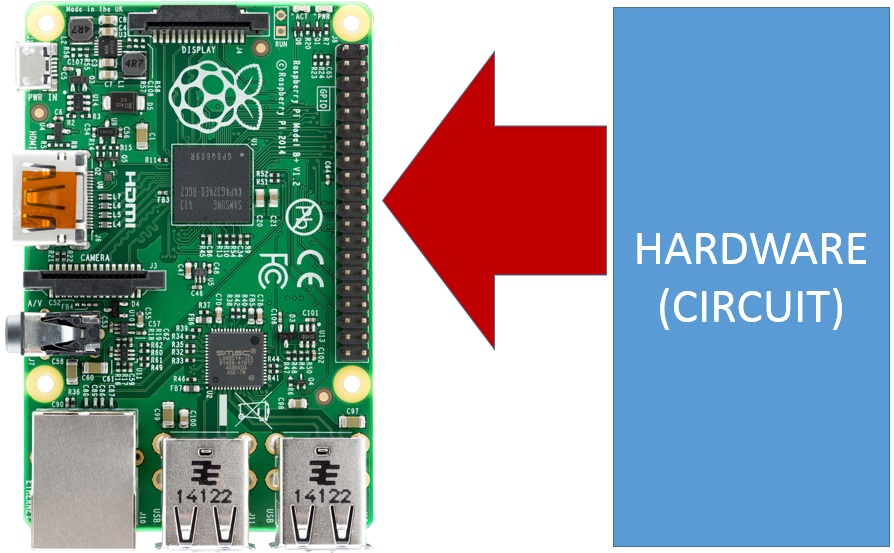
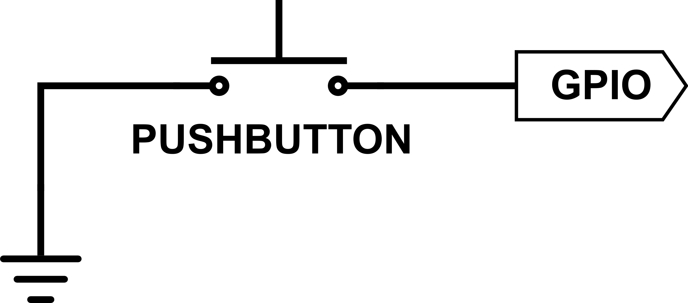

In our previous GPIO concept, we focused on how we could control our circuit from our code (GPIO as Outputs). This concept will focus on the other aspect of how GPIOs are used -- to allow the outside world (our circuits) to communicate with our code. This is important because we often want to trigger our code to do certain things or take certain actions based on input or changes coming from our circuit.
For example, our code might count the number of times a button is pressed in a short a period of time -- if the button is pressed once, have our code do one thing and if the button is pressed twice, have our code do something else. In this way, we've added "intelligence" to our button presses. When our hardware can communicate directly with our code, we open a world of possibilities.
So, how do we do this? By using GPIOs as Inputs.
Much like GPIO outputs work by simply setting a voltage on the GPIO pin to either low (0V) or high (3.3V), GPIO inputs work by reading the voltage -- either 0V or 3.3V -- being sent to the GPIO pin by the attached component:
For example, a GPIO can be used to get the current state of a button or switch (pressed or released). Based on the current state, the software can do what we expect when the button/switch is in that state.
"State" is a common term used in electronics and just means the current condition or situation of a component or circuit. For example, in the case of a button or switch, state would refer to whether the button is currently being pressed or released. For an LED, state might refer to whether the LED was illuminated or not.
For a component to communicate with our code, instead of wiring the component directly into the rest of the circuit, we instead wire the component directly to a GPIO. Typically, a component wired to a GPIO input would either generate 0V or 3.3V and the GPIO input would read that voltage and communicate it to our code -- hence the code knows about the "state" of the component.
Buttons are a little bit different, as they don't generate a voltage. But, with a little bit of behind-the-scenes configuration, we can wire a circuit so that our button can be used as a GPIO input and we can read the state of the button based on the voltages generated.
This is what the schematic would look like for a button wired to a GPIO as an input:
This circuit works by defaulting the GPIO voltage to 3.3V (that's the behind-the-scenes configuration we mentioned above, but not shown in the schematic). When the button is unpressed (circuit open), the GPIO reads the 3.3V default voltage. When the button is pressed, the circuit is closed, the GPIO gets pulled low (since it will be directly connected to ground), and will read 0V.
With this wiring and configuration, the code can measure the voltage at the GPIO and know if the button is pressed (0V at GPIO) or unpressed (3.3V at GPIO).
We'll explore GPIO inputs more in our next project, and will be using GPIO inputs when wiring buttons in all future projects.